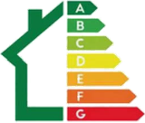

Diagnostics immobiliersVendre ou louer : tous vos diagnostics immobiliers, en une demande.
DPE, amiante, plomb, électricité, gaz, termites, état des risques : les diagnostics à fournir dépendent de votre bien et de votre projet. Votre conseiller vous indique lesquels sont nécessaires et vous établit un devis.
- Devis gratuit en 2 clics, un conseiller vous rappelle
- Les diagnostics exigés pour votre bien, sans oubli
- Pour les particuliers et les professionnels de l'immobilier
Plutôt par téléphone ? 01 79 72 70 10 Appel gratuit
- Diagnostiqueurs certifiés
- Devis gratuit
- Sans engagement
Vente ou location : quels diagnostics ?
La colonne de gauche indique quand chaque diagnostic s'applique à votre bien.
| Diagnostic | Vente | Location |
|---|---|---|
| DPETous les logements | Oui | Oui |
| AmiantePermis de construire d'avant le 1er juillet 1997 | Oui | À tenir à disposition |
| Plomb (CREP)Logement construit avant le 1er janvier 1949 | Oui | Oui |
| ÉlectricitéInstallation de plus de 15 ans | Oui | Oui |
| GazInstallation de plus de 15 ans | Oui | Oui |
| TermitesZones fixées par arrêté préfectoral | Oui | Non |
| État des risquesZones à risques (naturels, miniers, technologiques, sismicité, radon) | Oui | Oui |
| Audit énergétiqueMaison ou immeuble entier mis en vente, classé E, F ou G | Oui | Non |
| SurfaceVente d'un lot en copropriété ; location vide en résidence principale | Loi Carrez | Surface habitable |
Selon le bien, d'autres diagnostics peuvent s'ajouter : assainissement non collectif, bruit près d'un aéroport. Pas sûr de ce qui concerne votre bien ? Votre conseiller établit la liste exacte lors du rappel gratuit.
Comment votre dossier est constitué
Le dossier de diagnostic technique, de A à Z.
- Votre conseiller identifie les diagnostics exigés pour votre bien et votre projet
- Un diagnostiqueur certifié les réalise lors de la visite du bien
- Les rapports sont regroupés dans un dossier de diagnostic technique
- Le dossier est annexé à la promesse ou à l'acte de vente, ou au bail
La liste est plus longue pour une vente que pour une location.
Pourquoi ne pas s'en passer
Des diagnostics complets sécurisent votre vente ou votre location.
Pour votre vente
Un vendeur qui ne fournit pas les diagnostics obligatoires ne peut pas s'exonérer de la garantie des vices cachés, et l'acquéreur peut se retourner contre lui.
Pour votre location
Le dossier de diagnostic technique est annexé au bail. Certains logements énergivores ne pourront plus être loués selon un calendrier prévu par la loi.
Pour votre calendrier
Des diagnostics demandés au dernier moment peuvent retarder la signature. Anticiper évite les mauvaises surprises.
Ce que vous obtenez avec DIAGALIS
- Un devis gratuit en 2 clicsRemplissez le formulaire, un conseiller vous rappelle.
- Des diagnostiqueurs certifiésChaque diagnostic est réalisé par un opérateur certifié.
- La bonne liste de diagnosticsVotre conseiller vous indique ceux qui sont exigés pour votre bien.
Combien coûtent les diagnostics ?
Le prix dépend de la nature du bien (surface, nombre de pièces, âge du bâtiment) et de la liste de diagnostics exigés. Le devis est gratuit et précise le prix avant toute intervention.
Recevoir mon devis gratuitComment ça se passe
Cinq étapes, de la demande aux rapports.
- Remplissez le formulaire
- Un conseiller vous contacte et établit la liste des diagnostics
- Vous recevez votre devis gratuit
- Un diagnostiqueur certifié visite le bien
- Vous recevez votre dossier de diagnostic technique
Questions fréquentes
Quels diagnostics faut-il pour vendre un bien ?
Selon le bien : DPE, amiante (permis d'avant le 1er juillet 1997), plomb (avant 1949), électricité et gaz (installations de plus de 15 ans), termites (zones concernées), état des risques, et selon les cas assainissement non collectif ou mesurage loi Carrez. Votre conseiller établit la liste exacte.
Quels diagnostics faut-il pour louer un bien ?
Le DPE et l'état des risques, puis selon le bien : plomb (avant 1949), électricité et gaz (installations de plus de 15 ans), bruit près d'un aéroport. L'amiante est à tenir à disposition pour un bien d'avant le 1er juillet 1997. Pour une location vide en résidence principale, la surface habitable est indiquée au bail.
Quelle est la durée de validité des diagnostics ?
Elle varie : le DPE est valable 10 ans, l'état des risques moins de 6 mois à la signature, l'électricité et le gaz 3 ans pour une vente et 6 ans pour une location. Le plomb et l'amiante peuvent être illimités en l'absence de produit repéré. Votre conseiller vous précise les échéances.
Qui paie les diagnostics ?
Le propriétaire, qu'il vende ou qu'il loue.
Le DPE peut-il empêcher de louer ?
Oui, progressivement : la loi interdit de louer les logements les plus énergivores selon un calendrier (logements classés G depuis 2025, F à partir de 2028, E à partir de 2034).
Quel est le délai pour recevoir les rapports ?
Il dépend des diagnostics demandés et des éventuelles analyses en laboratoire. Le délai est annoncé dans votre devis gratuit.